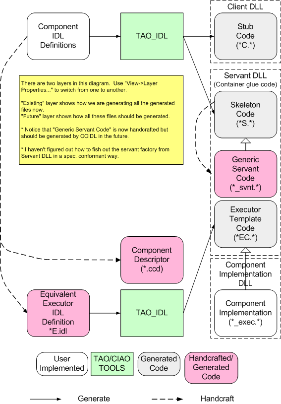

Implementing a CCM Component
This document explains how to implement a single component. At this
moment, CIAO lacks a CIDL compiler, and we depends on manually
generating the servant glue code for containers and local executor
interface. Check out this page to
find how all files are generate4d in CIAO.
The following figure shows how this is done:

And when we have a working CIDL (or, CCIDL "CIAO's Component
Implementation Definition Language") compiler, the file will be
generated using a CIDL file (which is rather simple.) This figure
depicts the "Right Way" [TM] this should be done:

I think it is debatable whether we should merge the "Servant DLL" and
"Component Implementation DLL" into one DLL. Me think not. My
approach, however, creates some complication on requireing a mechanism
to locate the servant code (and DLL) from component implementation.
Libraries Dependencies
Implementing a component creates 3
DLL's as shown in the above figure. Both "Servant DLL" and "Component
Implementation DLL" depend on the "Client DLL". "Servant DLL" and
"Component Implementation DLL" are not mutually dependent, however.
All the generated DLLs depends on other TAO and CIAO common
libraries. Here's a break down of which libraries depends on which
other libraries:
- Client DLL: ace.lib tao.lib TAO_IFR_Client.lib
CIAO_Clientd.lib
- Servant DLL: ace.lib tao.lib Client DLL
TAO_IFR_Client.lib TAO_PortableServer.lib TAO_Security.lib
CIAO_Container.lib CIAO_Client.lib
- Component Implementation DLL: ace.lib tao.lib
Client DLL TAO_IFR_Client.lib TAO_Security.lib
CIAO_Container.lib